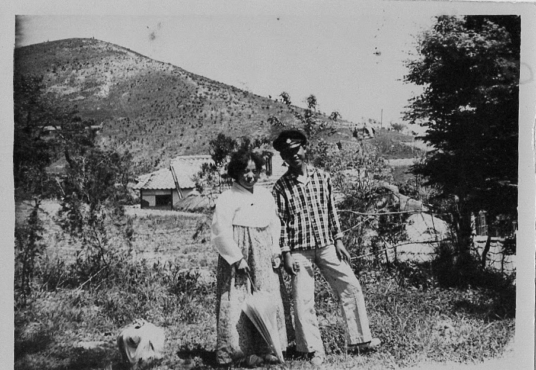
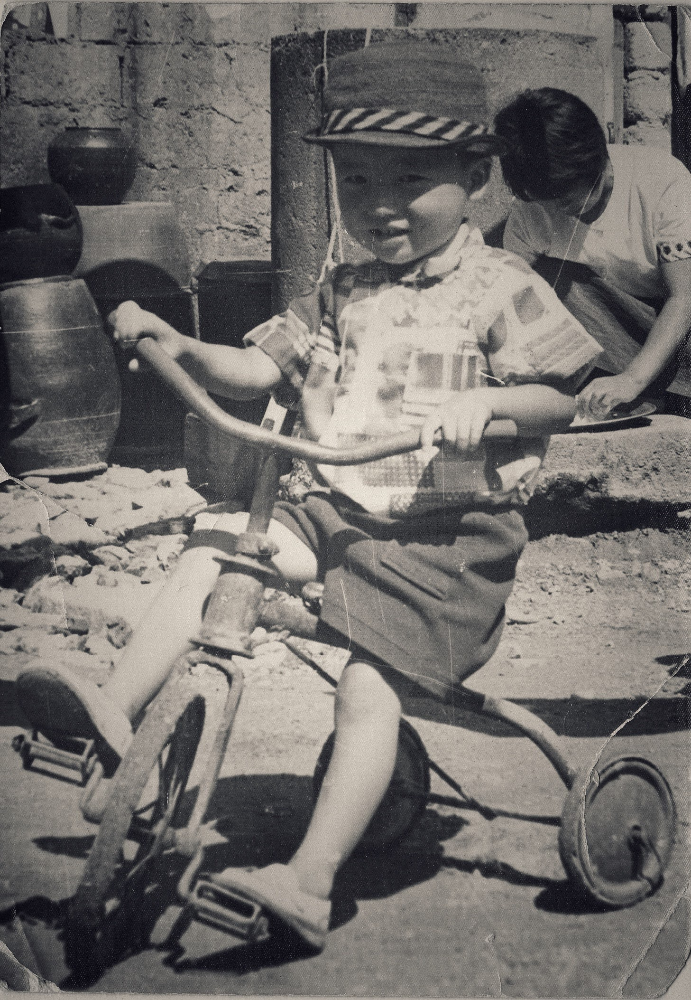
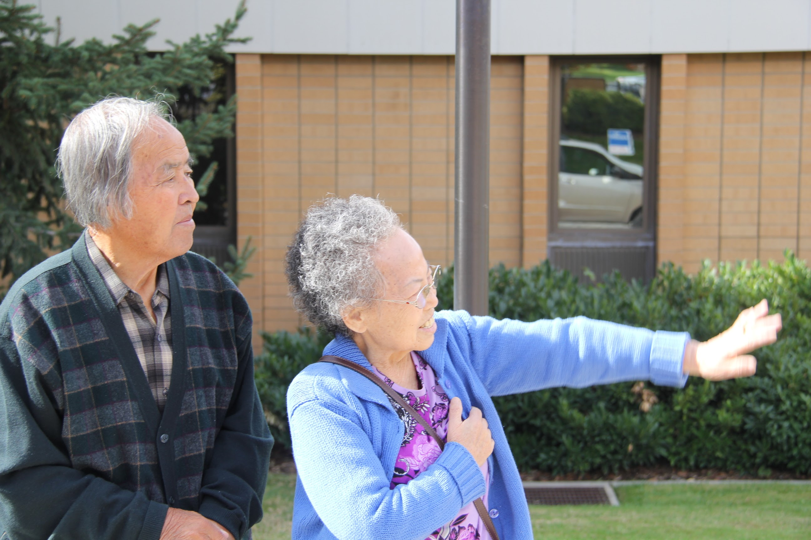

Growing up in Korea after the war meant nearly all things were scarce.
According to my uncle, per capita GDP following the Korean War was around 100 USD.
AI Overview,
South Korea’s gross national income (GNI) per capita increased from $67 in 1953 to $33,745 in 2023. This is a 31,000-fold increase. South Korea’s economy experienced significant growth after the Korean War (1950-1953), with the manufacturing sector contributing significantly to this growth. The country has also become globally competitive in cars, ships, steel, and consumer electronics
[$67 in 1953 is worth $786.81 today]
In those days, there were many things one could wish for but never attain.
And there were few items that were within reach but never get enough of.
Two of those were milk and green bananas.
The bananas were in short supply and they were always green and expensive. I didn’t realize the natural or ready to eat color of bananas were yellow until I came to America.
Nor did I get to find out the taste of it while in Korea.
We had a bottle of milk delivered to our home, when I began school.
The milk came in a 12 ounce bottle and 3 of us found creative ways to divide the content.
The contested and divided milk was savored.
Wished for a time when milk and bananas can be had in abundance.
There is a noodle shop in West Valley where many Koreans congregate.
I see many people that are my age and older.
However, I also see the next generation and their friends as well.
The daughter of the owner commented that I know many that visit the store.
Like visiting a local supermarket, I meet at least one person I know when I visit.
I belong to that group of Koreans that still remember times when food was scarce and that eating out meant a significant financial burden, an occasion to celebrate and escape, realities of a survival living.
Eating out meant Korean-Chinese restaurant.
They served several dishes but most people order one of 2 dishes.
Because these noodles were part of a special occasions, during growing up years, eating them now brings back those memories.
First bite reminds or triggers memories of difficult days growing up and helps me realize how far we have improved.
Now days these dishes are consumed not only for its taste but for nostalgia and sentimental reasons.

I live in a place that is flowing with milk and honey3.
As well as any other food that mankind has deemed desirable.
Basic needs, ones I dreamt about in Korea, have all been met.
Did I set my goals too low?
When young, I resisted my parents’ advice and their style of living.
Live a frugal life and live as if a calamity is about to happen.
I remember asking my mother, how she survived the Korean War.
She said,
We had a bunker next to the kitchen, when the siren rang or when the enemy (US Planes, since she was living in North Korea at the time) planes were sighted, we would hide in the bunker until the danger subsided.
She would further comment that these planes would fly low and the pilot would tilt the wings from side to side to get a better view the target.
I recall, bags lined up next to us, when we landed in Anchorage, Alaska for the immigration process.
We started a new chapter with less than 10 checked bags.
I don’t know how much they were able to bring on their escape from the North. link
Most likely less than the checked bags we had, on that flight to Alaska and on to Washington DC.
Don’t know how, but my parents made us feel like we were well off - even when an average person earned few hundred dollars a year.

In many ways, my parents fortified us against 2 sources of adversities.
Poverty and Wealth.
They showed how to live in times of plenty, cautiously.
As well as in times of war induced famine, courageously.
As recorded in Helaman 5,
…Behold, I have given unto you the names of our first parents who came out of the land of Jerusalem; and this I have done that when you remember your names ye may remember them; and when ye remember them ye may remember their works; and when ye remember their works ye may know how that it is said, and also written, that they were good.
It is now my generations turn to live and teach so that,
… my sons, I would that ye should do that which is good, that it may be said of you, and also written, even as it has been said and written of them.
